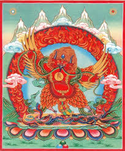

Гаруда в переводе с санскрита означает «пожиратель». В традициях индуизма Гаруда является ездовой птицей - вахана бога Вишну, известен как борец с нагами (змеями), или птицей бога солнца. Гаруда изображается существом с человеческим туловищем и орлиной головой, крыльями, когтями и клювом. Изображения его можно увидеть на индийских монетах четвертого и пятого веков.
В тибетском буддизме Ваджраяны Гаруда является идамом, одним из символов просветлённого ума.
Гаруда представляет элемент Огня, он также олицетворяет защитников местности. В мистерии "Цам" как в Тибете, так и в Монголии он появляется в жертвенном круге вместе с локальными хозяевами духами гор.
В тибетском буддизме существует много практик по лечению недугов и болезней связанны с практикой Гаруды, есть множество способов для выздоровления с помощью его мантры.